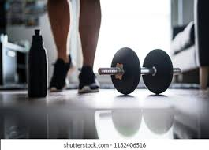

5 Simple Home Workouts to Stay Fit Without Equipment
Staying fit doesn’t always need a gym. With just your bodyweight, you can build strength and endurance right at home. Start with push-ups for your chest and arms, squats for your legs, and planks for your core. Add lunges and jumping jacks to boost mobility and stamina. Consistency is key—train at least five days a week and track your progress. Combine your workouts with healthy eating and enough sleep for best results. Fitness is all about daily movement and discipline—no fancy equipment required, only your dedication.
How to Stay Focused and Productive in a Distracted World
In today’s world of constant notifications and social media, staying focused is harder than ever. The key is to take control of your time. Start by setting small, achievable goals each day and work in focused blocks using the Pomodoro method. Keep your phone away while working, and limit social media to specific times. Take short breaks to refresh your mind. Also, ensure you sleep well and stay hydrated—your brain works best when you’re healthy. Remember, productivity isn’t about doing more, but doing what matters with full attention.
Top 5 Budget-Friendly Travel Destinations You Must Visit
Dreaming of travel but short on budget? Here are five amazing places to explore without breaking the bank. Bali, Indonesia offers beaches, temples, and affordable villas. Vietnam’s street food and natural beauty are unbeatable for travelers on a budget. Portugal is perfect for culture, coastlines, and cheap public transport. India’s diverse landscapes—from the Himalayas to Goa—offer adventure for every traveler. Finally, Thailand’s islands and night markets make it a paradise for budget explorers. Traveling smart means enjoying experiences, not expenses—plan ahead, stay local, and collect memories, not bills.